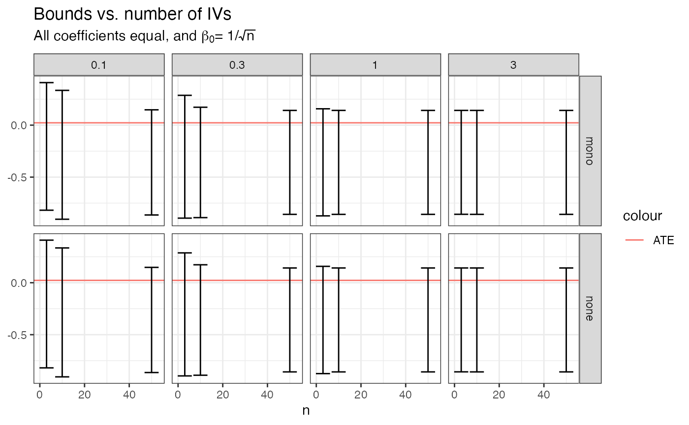
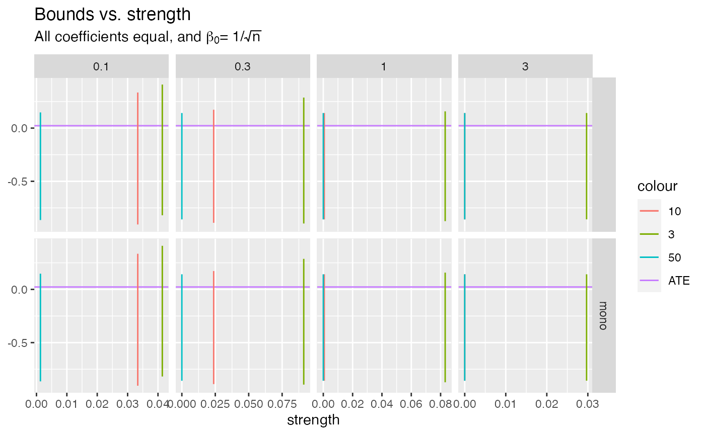
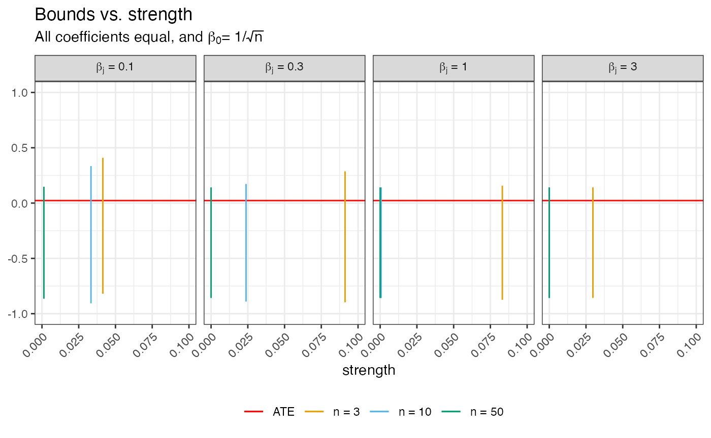
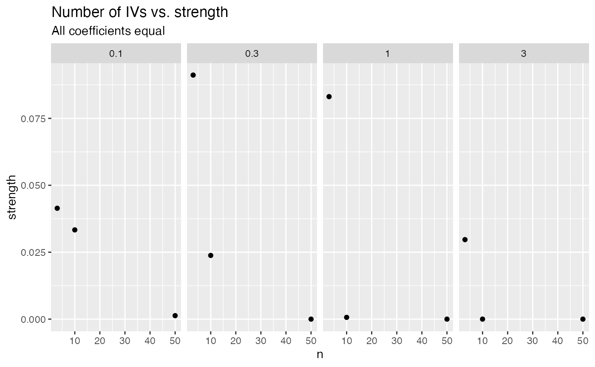
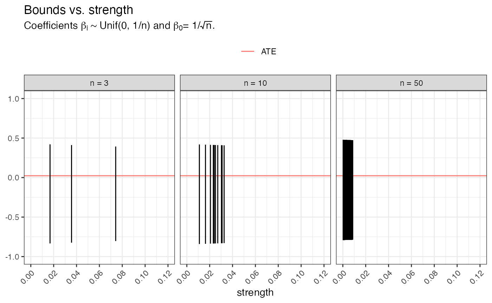
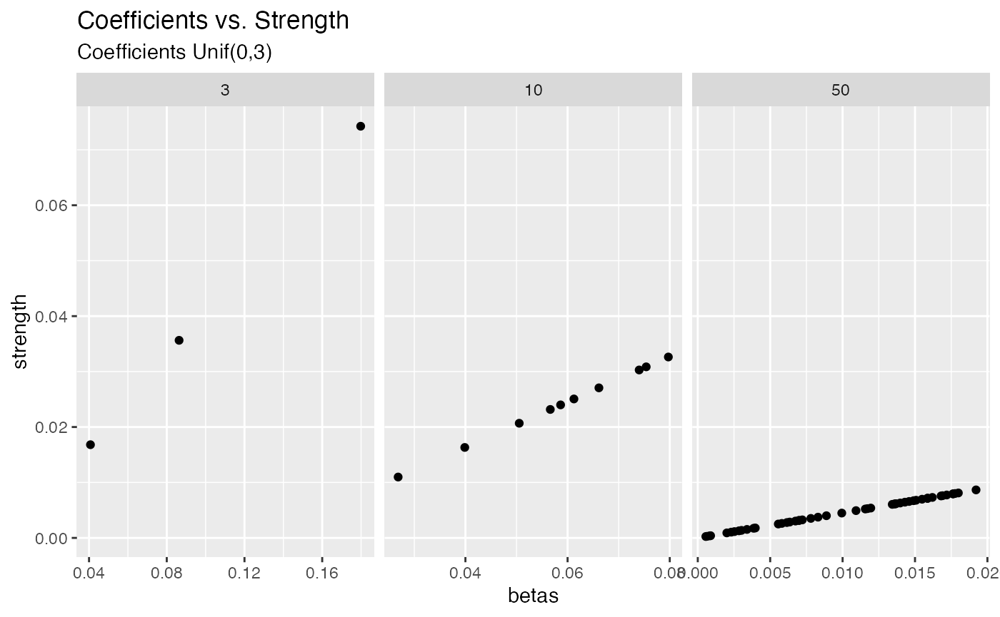
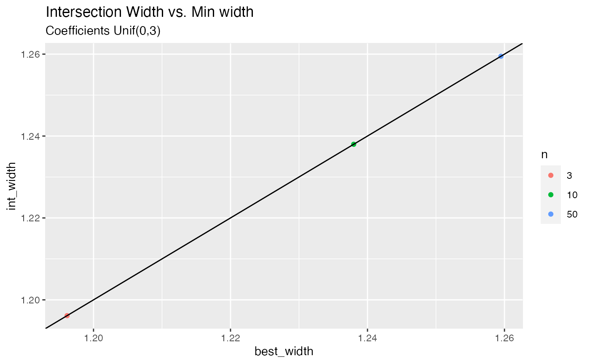

vignettes/bounds_from_bivariate_multiple_IVs.Rmd
bounds_from_bivariate_multiple_IVs.RmdThe purpose of this document is to illustrate the impact of utilizing multiple IVs to construct bounds on \(\alpha\). When a data set with all variables is not available, but we have to rely on multiple data sets to get observations of \((X,Z)\) and \((Y,Z)\), obtained bounds tend to be significantly less informative. It can be shown that if the effect of the IV is monotone on both \(X\) and \(Y\), the strength of the IV on \(X\) (here defined as \(P(X = 1 | Z = k) - P(X = 1 | Z = 0)\)) has to be at least \(0.5\) for the width of the bounds to be guaranteed to be less than \(1\), something which is always the case when obtaining bounds through trivariate data.
A natural question to ask is if we can make up for this lack of information by utilizing multiple IVs.
We will investigate this through the following model, which is often used in mendelian randomization (MR) analyses:
\[\begin{aligned} \text{logit}(P(X = 1 | Z_1 = z_1, ..., Z_n = z_n)) &= \beta_0 + \sum_i \beta_i z_i \\ \text{logit}(P(Y = 1 | X = x)) &= \gamma_0 + \gamma_1 x \end{aligned}\]
Here, \(Y \in \{0,1\}, X \in \{0,1\}\), and \(Z_i \in \{0, 1, 2\}\). The function marginals_from_logit() calculates the value of \(P(X = 1 | Z_j = z)\) for all \(j\), \(z\). For more info, see ?marginals_from_logit.
First, we will consider the example where \(\beta_1 = \beta_2 = ... = \beta_n = \beta\). We will consider scenarios for every combination of \(\beta_0 = -2, \beta \in \{0.1, 0.3, 1, 3\}, \gamma_0 = -1, \gamma_1 = 1, n = \{3, 10, 20, 30, 40, 50\}\).
First, create tibble with row for each combination, and add columns for \(P(Y = 1 | X = 0)\) and \(P(Y = 1 | X = 1)\).
## ── Attaching packages ────────────────────────────────────────────────── tidyverse 1.3.0 ──## ✓ ggplot2 3.3.2 ✓ purrr 0.3.4
## ✓ tibble 3.0.3 ✓ dplyr 1.0.1
## ✓ tidyr 1.1.1 ✓ stringr 1.4.0
## ✓ readr 1.3.1 ✓ forcats 0.5.0## ── Conflicts ───────────────────────────────────────────────────── tidyverse_conflicts() ──
## x dplyr::filter() masks stats::filter()
## x dplyr::lag() masks stats::lag()set.seed(14141414) many_IVs <- expand_grid(beta = c(0.1, 0.3, 1, 3), n = c(3, 10, 50), gamma0 = -2, gamma1 = 0.2) %>% rowwise() %>% mutate(`P(X = 1 | Z)` = list(marginals_from_logit(b0 = 1/sqrt(n), b = rep(beta, n), p.z = rep(list(c(0.25, 0.5, 0.25)), n)))) %>% ungroup() %>% mutate(`P(Y = 1 | X = 0)` = 1/(1+exp(-gamma0)), `P(Y = 1 | X = 1)` = 1/(1+exp(-gamma0 - gamma1)), ACE = `P(Y = 1 | X = 1)` - `P(Y = 1 | X = 0)`)
Next, we add columns for \(P(Y = 1 | Z = z), z = 0,1,2\), and calculate bounds both without any monotonicity assumptions, and where we assume the effect of \(Z\) on \(X\) is monotonically increasing.
with_bounds <- many_IVs %>% unnest(`P(X = 1 | Z)`) %>% mutate(`P(Y = 1 | Z_j = 0)` = `P(Y = 1 | X = 1)`*`P(X = 1 | Z_j = 0)` + `P(Y = 1 | X = 0)`*(1-`P(X = 1 | Z_j = 0)`), `P(Y = 1 | Z_j = 1)` = `P(Y = 1 | X = 1)`*`P(X = 1 | Z_j = 1)` + `P(Y = 1 | X = 0)`*(1-`P(X = 1 | Z_j = 1)`), `P(Y = 1 | Z_j = 2)` = `P(Y = 1 | X = 1)`*`P(X = 1 | Z_j = 2)` + `P(Y = 1 | X = 0)`*(1-`P(X = 1 | Z_j = 2)`)) %>% rowwise() %>% mutate(gammas = list(c(`P(Y = 1 | Z_j = 0)`, `P(Y = 1 | Z_j = 1)`, `P(Y = 1 | Z_j = 2)`)), thetas = list(c(`P(X = 1 | Z_j = 0)`, `P(X = 1 | Z_j = 1)`, `P(X = 1 | Z_j = 2)`)), bounds = list(get_bounds(gammas = gammas, thetas = thetas, warning = FALSE, stop = FALSE)), mono_bounds = list(get_bounds(gammas = gammas, thetas = thetas, stop = FALSE, warning = FALSE, x_mono = TRUE))) with_bounds %>% mutate(constraints = bounds$constraints_violated, mono_constraints = mono_bounds$constraints_violated) %>% group_by(n, beta) %>% summarize(sum(constraints))
## `summarise()` regrouping output by 'n' (override with `.groups` argument)## # A tibble: 12 x 3
## # Groups: n [3]
## n beta `sum(constraints)`
## <dbl> <dbl> <int>
## 1 3 0.1 0
## 2 3 0.3 0
## 3 3 1 0
## 4 3 3 0
## 5 10 0.1 0
## 6 10 0.3 0
## 7 10 1 0
## 8 10 3 0
## 9 50 0.1 0
## 10 50 0.3 0
## 11 50 1 0
## 12 50 3 0When all coefficients are identical, probabilities \(P(X = 1 | Z_j = z)\) are identical for all IVs. Therefore, we collapse the tibble to only have one row per set of parameters. For each set of parameters, we have lower and upper bounds (both with and without the monotonicity assumption), and we also calculate the strength of \(Z\) on \(X\), i.e. \(P(X = 1 | Z_j = 2) - P(X = 1 | Z_j = 0)\).
for_plots <- with_bounds %>% mutate(interval = list(bounds$interval), constraints_violated = bounds$constraints_violated, mono_interval = list(mono_bounds$interval), mono_constraints_violated = mono_bounds$constraints_violated) %>% ungroup() %>% mutate(strength = `P(X = 1 | Z_j = 2)` - `P(X = 1 | Z_j = 0)`) %>% select(-contains("P(")) %>% unnest_wider(mono_interval) %>% rename(mono_upper = upper, mono_lower = lower) %>% unnest_wider(interval) %>% group_by(beta, n, ACE) %>% summarize(lower = unique(lower), upper = unique(upper), mono_lower = unique(mono_lower), mono_upper = unique(mono_upper), strength = unique(strength))
## `summarise()` regrouping output by 'beta', 'n' (override with `.groups` argument)print(for_plots, n = 24)
## # A tibble: 12 x 8
## # Groups: beta, n [12]
## beta n ACE lower upper mono_lower mono_upper strength
## <dbl> <dbl> <dbl> <dbl> <dbl> <dbl> <dbl> <dbl>
## 1 0.1 3 0.0226 -0.819 0.410 -0.818 0.410 0.0414
## 2 0.1 10 0.0226 -0.906 0.335 -0.905 0.335 0.0333
## 3 0.1 50 0.0226 -0.864 0.148 -0.864 0.148 0.00130
## 4 0.3 3 0.0226 -0.897 0.287 -0.895 0.287 0.0912
## 5 0.3 10 0.0226 -0.890 0.173 -0.890 0.173 0.0238
## 6 0.3 50 0.0226 -0.858 0.142 -0.858 0.142 0.000000485
## 7 1 3 0.0226 -0.875 0.158 -0.873 0.158 0.0831
## 8 1 10 0.0226 -0.858 0.142 -0.858 0.142 0.000659
## 9 1 50 0.0226 -0.858 0.142 -0.858 0.142 0
## 10 3 3 0.0226 -0.858 0.142 -0.858 0.142 0.0297
## 11 3 10 0.0226 -0.858 0.142 -0.858 0.142 0.00000539
## 12 3 50 0.0226 -0.858 0.142 -0.858 0.142 0The following figure shows the bounds for each setting.
bounds_vs_nIVs <- for_plots %>% select(n, contains("lower"), contains("upper"), beta, strength, ACE) %>% pivot_longer(cols = c(contains("lower"), contains("upper"))) %>% separate(name, into = c("assumption", "bound"), sep = "_", fill = "left") %>% mutate(assumption = if_else(is.na(assumption), "none", assumption)) %>% pivot_wider(names_from = bound, values_from = value) %>% ggplot(aes(x = n)) + geom_hline(aes(yintercept = ACE, color = "ATE")) + geom_errorbar(aes(ymin = lower, ymax = upper)) + facet_grid(assumption ~ beta) + labs(title = "Bounds vs. number of IVs", subtitle = expression(paste("All coefficients equal, and ", beta[0], "= 1/", sqrt(n)))) bounds_vs_nIVs

Next, we show the same intervals, but plotted against strength rather than number of IVs.
bounds_vs_strength <- for_plots %>% select(n, contains("lower"), contains("upper"), beta, strength, ACE) %>% pivot_longer(cols = c(contains("lower"), contains("upper"))) %>% separate(name, into = c("assumption", "bound"), sep = "_", fill = "left") %>% mutate(assumption = if_else(is.na(assumption), "", assumption), n = as.character(n)) %>% pivot_wider(names_from = bound, values_from = value) %>% ggplot(aes(x = strength)) + geom_hline(aes(yintercept = ACE, color = "ATE")) + geom_errorbar(aes(ymin = lower, ymax = upper, color = n)) + facet_grid(assumption ~ beta, scales = "free") + labs(title = "Bounds vs. strength", subtitle = expression(paste("All coefficients equal, and ", beta[0], "= 1/", sqrt(n)))) bounds_vs_strength

For the paper, we exclude the row where monotonicity is assumed.
bounds_vs_strength_paper <- for_plots %>% select(n, lower, upper, beta, strength, ACE) %>% mutate(n = paste("n =", n)) %>% ggplot(aes(x = strength)) + geom_hline(aes(yintercept = ACE, color = "ATE")) + geom_errorbar(aes(ymin = lower, ymax = upper, color = n)) + scale_x_continuous(limits = c(0, 0.1)) + scale_y_continuous(limits = c(-1,1)) + scale_color_manual("", values = c("red", ggthemes::colorblind_pal()(4)[-1]), breaks = c("ATE", "n = 3", "n = 10", "n = 50")) + facet_grid(. ~ beta, scales = "free", labeller = label_bquote(cols = paste(beta[j], " = ", .(beta)))) + labs(title = "Bounds vs. strength", subtitle = expression(paste("All coefficients equal, and ", beta[0], "= 1/", sqrt(n)))) + theme_bw() + theme(axis.text.x = element_text(angle = 45, hjust = 1), legend.position = "bottom") bounds_vs_strength_paper

Relationship between number of IVs and the strength of the IVs.
strength_vs_nIVs <- ggplot(for_plots, aes(x = n, y = strength)) + geom_point() + facet_grid(~beta, scales = "free") + labs(title = "Number of IVs vs. strength", subtitle = "All coefficients equal") strength_vs_nIVs

Since all intervals are the same for all IVs when all \(\beta_i\)’s are equal, little information is gained by having multiple IVs in this case. Let us see what happen when the IVs have varying coefficients. Here, we let \(\beta_i \sim \text{Uniform}(0,3)\).
The following is the same as previously, except coefficients are now drawn from a uniform distribution, and the intercept is \(1/\sqrt{n}\), where \(n\) is the number of IVs included.
varying_betas <- expand_grid(n = c(3, 10, 50), gamma0 = -2, gamma1 = 0.2) %>% rowwise() %>% mutate(betas = list(runif(n = n, min = 0, max = 1/n)), `P(X = 1 | Z)` = list(marginals_from_logit(b0 = 1/sqrt(n), b = betas, p.z = rep(list(c(0.25, 0.50, 0.25)), n)))) %>% ungroup() %>% mutate(`P(Y = 1 | X = 0)` = 1/(1+exp(-gamma0)), `P(Y = 1 | X = 1)` = 1/(1+exp(-gamma0 - gamma1)), ACE = `P(Y = 1 | X = 1)` - `P(Y = 1 | X = 0)`)
## You'll run out of memory. Switching to MCMC approx...varying_betas_with_bounds <- varying_betas %>% unnest(cols = c(betas, `P(X = 1 | Z)`)) %>% mutate(`P(Y = 1 | Z_j = 0)` = `P(Y = 1 | X = 1)`*`P(X = 1 | Z_j = 0)` + `P(Y = 1 | X = 0)`*(1-`P(X = 1 | Z_j = 0)`), `P(Y = 1 | Z_j = 1)` = `P(Y = 1 | X = 1)`*`P(X = 1 | Z_j = 1)` + `P(Y = 1 | X = 0)`*(1-`P(X = 1 | Z_j = 1)`), `P(Y = 1 | Z_j = 2)` = `P(Y = 1 | X = 1)`*`P(X = 1 | Z_j = 2)` + `P(Y = 1 | X = 0)`*(1-`P(X = 1 | Z_j = 2)`), strength = `P(X = 1 | Z_j = 2)` - `P(X = 1 | Z_j = 0)`) %>% rowwise() %>% mutate( gammas = list(c(`P(Y = 1 | Z_j = 0)`, `P(Y = 1 | Z_j = 1)`, `P(Y = 1 | Z_j = 2)`)), thetas = list(c(`P(X = 1 | Z_j = 0)`, `P(X = 1 | Z_j = 1)`, `P(X = 1 | Z_j = 2)`)), bounds = list(get_bounds(gammas = gammas, thetas = thetas, stop = FALSE, warning = FALSE)), mono_bounds = list(get_bounds(gammas = gammas, thetas = thetas, stop = FALSE, warning = FALSE, x_mono = TRUE)) ) # DT::datatable( # varying_betas_with_bounds, # options = list(scrollX = TRUE, # scrollY = 300, # dom = "t"), # rownames = FALSE # )
Since coefficients vary, we do not reproduce the first plot presented above, but instead go straight to bounds vs. strength. What’s interesting to observe here is that the bounds are monotonically shrinking as the strength increases. We know this to be the case in theory when everything else is equal.
varying_betas_for_plots <- varying_betas_with_bounds %>% rowwise() %>% mutate(interval = list(bounds$interval), mono_interval = list(mono_bounds$interval)) %>% ungroup() %>% select(-contains("P(")) %>% unnest_wider(mono_interval) %>% rename(mono_upper = upper, mono_lower = lower) %>% unnest_wider(interval) %>% ungroup() varying_betas_bounds_vs_strength_no_mono <- varying_betas_for_plots %>% ggplot(aes(x = strength)) + geom_hline(aes(yintercept = ACE, color = "ATE")) + geom_errorbar(aes(ymin = lower, ymax = upper)) + scale_x_continuous(limits = c(0, 0.12), breaks = c(0, 0.02, 0.04, 0.06, 0.08, 0.10, 0.12)) + scale_y_continuous(limits = c(-1,1)) + facet_grid( ~ n, labeller = function(...) label_both(..., sep = " = ")) + labs(title = "Bounds vs. strength", subtitle = expression(paste("Coefficients ", beta[i], " ~ Unif(0, 1/n) and ", beta[0], "= 1/", sqrt(n), ".", sep = "")), color = "") + theme_bw() + theme(axis.text.x = element_text(angle = 45, hjust = 1), legend.position = "bottom") varying_betas_bounds_vs_strength_no_mono

Here is the strength of each IV against the corresponding coefficient. We see that increasing the coefficient by a certain amount leads to much smaller increase in strength when the total number of IVs included is larger. This makes sense, since when we include more variables in our model, \(P(X = 1 | Z_1,...,Z_n)\) will increase, and eventually be practically one.
varying_betas_coefs_vs_strength <- ggplot(varying_betas_for_plots, aes(x = betas, y = strength)) + geom_point() + facet_grid(~n, scales = "free") + labs(title = "Coefficients vs. Strength", subtitle = "Coefficients Unif(0,3)") varying_betas_coefs_vs_strength

The main question here is “what happens if we have many IVs, and combine the information to obtain bounds?” One way of doing that is by taking intersections of multiple bounds. It turns out that the information we obtain from doing so is practically equivalent to simply using the strongest IV. This is the case since the bounds are monotonically shrinking.
The plot below illustrates this by showing the width of the intersections plotted against the smallest width of the bounds going into that intersection.
varying_betas_intersection_vs_best <- varying_betas_for_plots %>% group_by(n = factor(n)) %>% summarize(int_lower = max(lower), int_upper = min(upper), best_width = min(upper - lower), int_width = int_upper - int_lower) %>% ggplot(aes(x = best_width, y = int_width, color = n)) + geom_point() + geom_abline() + labs(title = "Intersection Width vs. Min width", subtitle = "Coefficients Unif(0,3)")
## `summarise()` ungrouping output (override with `.groups` argument)varying_betas_intersection_vs_best
For good measure, here are the values plotted above including the intersection bounds, and the set of bounds resulting in the smallest width.
varying_betas_for_plots %>% group_by(n = factor(n)) %>% summarize(int_lower = max(lower), int_upper = min(upper), best_width_lower = lower[which(upper - lower == min(upper - lower))], best_width_upper = upper[which(upper - lower == min(upper - lower))], best_width = min(upper - lower), int_width = int_upper - int_lower)
## `summarise()` ungrouping output (override with `.groups` argument)## # A tibble: 3 x 7
## n int_lower int_upper best_width_lower best_width_upper best_width
## <fct> <dbl> <dbl> <dbl> <dbl> <dbl>
## 1 3 -0.803 0.393 -0.803 0.393 1.20
## 2 10 -0.830 0.408 -0.830 0.408 1.24
## 3 50 -0.786 0.473 -0.786 0.473 1.26
## # … with 1 more variable: int_width <dbl>ggsave( filename = here::here("figures", "bounds_vs_nIVs.png"), plot = bounds_vs_nIVs, dpi = 300 )
## Saving 7.29 x 4.51 in imageggsave( filename = here::here("figures", "bounds_vs_strength.png"), plot = bounds_vs_strength, dpi = 300 )
## Saving 7.29 x 4.51 in imageggsave( filename = here::here("figures", "bounds_vs_strength_paper.png"), plot = bounds_vs_strength_paper, width = 7, height = 4, dpi = 300 ) ggsave( filename = here::here("figures", "strength_vs_nIVs.png"), plot = strength_vs_nIVs, dpi = 300 )
## Saving 7.29 x 4.51 in image# ggsave( # filename = here::here("figures", "varying_betas_bounds_vs_strength.png"), # plot = varying_betas_bounds_vs_strength, # dpi = 300 # ) ggsave( filename = here::here("figures", "varying_betas_bounds_vs_strength_no_mono.png"), plot = varying_betas_bounds_vs_strength_no_mono, width = 7, height = 4, dpi = 300 ) ggsave( filename = here::here("figures", "varying_betas_coefs_vs_strength.png"), plot = varying_betas_coefs_vs_strength, dpi = 300 )
## Saving 7.29 x 4.51 in imageggsave( filename = here::here("figures", "varying_betas_intersection_vs_best.png"), plot = varying_betas_intersection_vs_best, dpi = 300 )
## Saving 7.29 x 4.51 in image